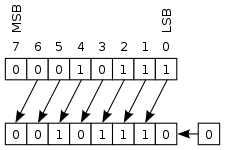
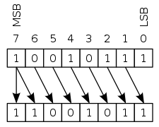
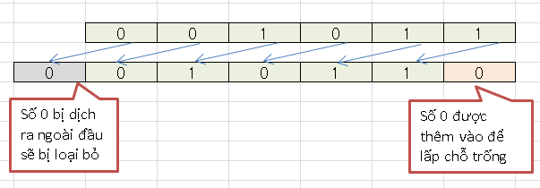
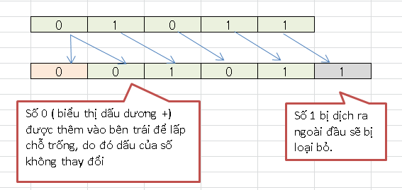

Pythonのビット演算子について説明します。この記事を通じ、ANDやOR、NOT、XORなどのビット演算子の記述方法と使い方を学びましょう。
Pythonでのビットとは
ビットとは
Pythonのビット演算子について学ぶ前に、ビットとは何かを調べましょう。
日常生活では、0から9までの数字で小数を書くことがよくあります。たとえば、10ポイント、今日の円価格は20.6などです。
しかし、コンピューターはその数を理解することはできません。コンピュータでは、電流が流れるまたは電流は流れないといった2つの状態しか存在しません。これらの2つの状態に対応するものは次のとおりです。
- 0 : 電流は流れません
- 1 : 電流が流れています
コンピューターは、上記の2つの状態に対応する 0と1の２つの数字で、コンピューター内のすべての種類の情報データを表します。そしてコンピュータはそれの数字かしか使えないため、他の数字もこの２つ数字の組み合わせで表示します。
0と1の２つの数字で組み合わせて表示される数字を２進数（バイナリ）と呼ばれています。そしてそれぞれの0と1の数字を1bitを呼ばれ、2進数を表す最小のデータ単位です。
言い換えれば、ビットはコンピュータ内のあらゆる種類の情報データを表す最小のデータ単位です。
私たちは、表現されている番号を呼び出す。二つの数字によって表される0と1ある進数。また、各桁0または2進数1を表すために使用されるものは1ビットと呼ばれます。言い換えれば、ビットはコンピュータで2進数を表す最小のデータ単位です。ビットは、表す最小のデータ単位でもあります
Pythonのビットの概念は上記と同様です。ビットは、コンピューター内のあらゆる種類の情報データを表す最小のデータ単位です。 Pythonでビットを処理するには、Pythonのビット演算子が必要です。
Pythonでのビットの実用例
Pythonに限らず、コンピュータサイエンスでは、さまざまな仕事にビットを適用できます。
- ゲームの状態（通常、睡眠、中毒、戦闘状態など）を管理します
- システム状態管理（実行中、エラーなど）
- プログラムのエラー状態管理
- RGBカラーの操作
- Linuxでファイルのアクセス許可を管理する
- .Netでキーストローク値を管理する（Shift、Control、Alt …）
- 検索操作の処理
….
Pythonのビット演算子
Pythonのビット演算子がbitwise演算子またはBiwter演算子も呼ばれ、Pythonでビットを操作するための演算子です。
次の表に示すように、Pythonでは6ビットの操作演算子を使用できます。これらはビット単位の計算にのみ使用されることに注意してください。
Pythonのビット演算子表
x & y ANDx | y OR~x NOTx ^ y XORx << n 左シフトx >> n 右シフト
ビット演算AND
ビットAND演算演算子は、2つの数値の同じ位置にあるビットを互いに比較します。同じ場合は1を返し、異なる場合は0を返します。
PythonでのビットANDビットの構文は次のとおりです。
x & y
ANDビットを使用して2つの数値10と12を比較する場合の例です。最初に、10と12の2つの数値を2進数として表します。
10 & 12 ---------- 10 = 1010 12 = 1100
次に、2つの数値の位置が同じビット（2進数の各桁）を比較し、同じ場合は1を返し、異なる場合は0を返します。
| 10 | 12 | 10 & 12 |
|---|---|---|
| 1 | 1 | 1 |
| 0 | 1 | 0 |
| 1 | 0 | 0 |
| 0 | 0 | 0 |
その結果、２進数の1000が得られ、これは10進数の08です。
ビット演算OR
ビットOR演算子は、2つの数値の同じ位置にあるビットを相互に比較し、ビットの1つが1に等しい限り、1を返し、それ以外の場合は0を返します。
PythonのビットOR構文は次のとおりです。
x | y
たとえば、ORビットを使用して2つの数値10と12を比較する場合、最初に2つの数値10と12を2進数として表します。
10 | 12 ---------- 10 = 1010 12 = 1100
次に、2つの数値の同じ位置にあるビット（2進数の各桁）を互いに比較します。いずれかのビットが1に等しい場合は、1を返し、それ以外の場合は0を返します。
。
10| 12 | (10|12) ------------------ | 1 | 1 | 1 | | 0 | 1 | 1 | | 1 | 0 | 1 | | 0 | 0 | 0 |
その結果、２進数の1110が得られ、これは10進数の14です。
ビット演算NOT
NOTビット演算演算子は、数値の各ビットの逆数を返します。ビットが0の場合は1を返し、ビットが1の場合は0を返します。
PythonのNOTビットの構文は次のとおりです。
~x
数値10のNOTビットを使用する場合の例。最初に、数値10を2進数として表します。
~10 ---------- 10 = 1010
次に、2進数の各ビットの値を逆にします。
| 10 | ~12 |
|---|---|
| 1 | 0 |
| 0 | 1 |
| 1 | 0 |
| 0 | 1 |
その結果、２進数の0101が得られ、これは10進数の05です。
ビット演算XOR
ビット単位のXOR演算子は、2つの数値の同じ位置にあるビットを比較します。ビットの1つだけが1に等しい場合、1を返し、それ以外の場合は0を返します。
PythonのXOR構文ビットは次のとおりです。
x ^ y
たとえば、XORビットを使用して2つの数値10と12を比較する場合、最初に2つの数値10と12を2進数として表します。
10 & 12 ---------- 10 = 1010 12 = 1100
次に、ビット（2進数の各桁）を2つの数値の同じ位置と比較します。2つのビットの1つだけの値が1の場合、1を返し、それ以外の場合はすべて0を返します。
| 10 | 12 | 10 & 12 |
|---|---|---|
| 1 | 1 | 0 |
| 0 | 1 | 1 |
| 1 | 0 | 1 |
| 0 | 0 | 0 |
その結果、２進数の0110が得られ、これは10進数の06です。
Pythonのビットシフト
Pythonでは、ビットから左へとビットから右への2つのビットシフト演算を使用します。ビットシフトの場合、ヘッドまたはテールを介してシフトされた数値は破棄されます。
ビットを左にシフトすると、左のギャップを埋めるために右にゼロが追加されます。

ビットを右にシフトすると、左に符号を表すビットが追加されて左のスペースが埋められ、数値の符号が保持されます。

ビット演算 左シフト
Pythonの左シフト操作は、指定されたビット数から左にシフトされた数を返します。
Pythonでの左シフト操作の構文は次のとおりです。
x << n
例えば：
11 << 1 |

その結果、２進数の010110が得られ、これは10進数の22です。
ビット演算 右シフト
Pythonの右シフト操作は、指定されたビット数の右側にシフトされた数値を返します。
Pythonでの右ビットシフト操作の構文は次のとおりです。
x >> n
たとえば、Pythonで右ビットシフト操作を使用して、数値11を1ビット右にシフトします。最初に11を2進数として表し、次に2進数を次のように1ビット左にシフトします。
11 >> 1 1011 = 11 ------------ 0101 = 5
その結果、２進数の0101が得られ、これは10進数の5です。

まとめ
上記では、KiyoshiはPythonのビット演算子について説明しました。レッスンの内容をよりよく理解するために、各例文を練習をしてください。
そして、次のレッスンでPythonの知識についてもっと学びましょう。
HOME>> python基礎 初心者向けのpython学習>>05. pythonの数字